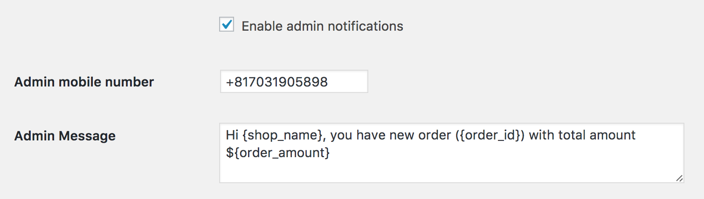

Installation Guide for WooCommerce Phone Verification by RingCaptcha
Plugin Name: WooCommerce Phone Verification by RingCaptcha
Version: 2.3
Author: RingCaptcha
Description: WooCommerce Phone Verification by “RingCaptcha” is a WooCommerce Plugin that enables you to verify whether a user phone is real or not. All you need to do is install the plug-in, and register at RingCaptcha to get your App key and Secret key and you’re done!
Installation and Setup
- Download "WooCommerce Phone Verification by RingCaptcha".
- Exact the .zip file. It contains 3 folders: documentation, licensing, and ringcaptcha2woocommerce.
- Locate the folder name "ringcaptcha2woocommerce" and compress to .zip file.
- Go to your WordPress Dashboard » Plugins » Add New » Upload » Select "ringcaptcha2woocommerce.zip", click "Open".
- Next, Click "Install Now"
- Click "Activate Plugin".
- After Activation, Go to WooCommerce Dashboard » RC2wooCommerce Dashboard.
- Go to RingCaptcha and register to get your App Key and Secret Key.
- After Register, login to your account and create a new app. Under "My Apps" tab, click "Create New".
- A window will popup. Choose "Web" as App type.
- Input your website’s domain name. "Localhost" is accepted for development purpose. Click "Create App".
- You can now view your newly created app from the dashboard. Now you can see your App Key and Secret Key.
(Note: If you see **** in Secret Key, just click it and it would reveal your key). - Copy and paste the App Key and Secret Key on your WooCommerce RingCaptcha Settings. Also check the checkbox to enable RingCaptcha2wooCommerce. Click "Save Changes".
- Congratulations! Now you can use the difference functionalities of the WooCommerce RingCaptcha plugin!


Here's the video guide and how it works
How to activate SMS Notifications
- You can send us an email at "accounts@ringcaptcha.com" or contact us on our Intercom live support at https://ringcaptcha.com if you want to turn on SMS Notifications.
- After we activate SMS functionalities with your RingCaptcha account, check "Enable SMS Notifications".
- Check the "Enable admin notifications" if you want to receive SMS notifications whenever a customer places an order.
You could also edit the content of the SMS. Input your own phone number for SMS notifications.

- You can set-up your page to automatically send SMS notifications to customers on certain states regarding their orders.
- Bonus: You can send direct SMS to your customers if you want to reach them out!

Note:
If you have any comments, suggestions, bugs discovered or questions regarding the setup, you can visit https://ringcaptcha.com and message us through our Intercom, or send us an email at accounts@ringcaptcha.com